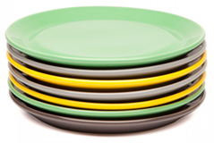
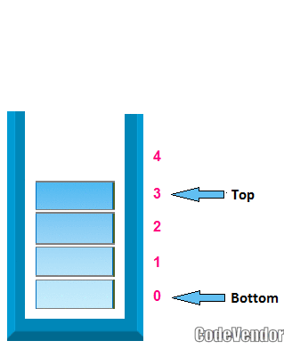
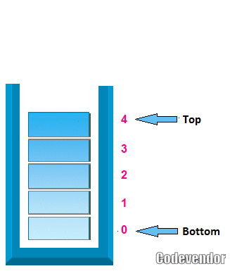

Stack is linear data structure. In stack addition of new data item and deletion of already existing data item is done from only one end, known as top. Working of stack on the basis of Last-in-First-out (LIFO) principal, it means last entered item remove first.
Real life example of stack
A most popular example of stack is plates in marriage party. Fresh plates are pushed onto to the top and popped from the top.

Stack Operation
In stack data structure mainly perform two operation; push and pop
pop:
In case of stack deletion of any item from stack is called pop.
push:
In case of stack Insertion of any item in stack is called push.
Push Operation

In case of stack Insertion of any item in stack is called push. In stack any item is inserted from top of the stack, When you insert any item in stack top will be increased by 1.
Algorithm for push
1. Initialization, set top=-1
2. Repeat step 3 to 5 until top<Max size-1
3. Read, item
4. Set top=top+1
5. Set stack[top]=item
6. Print "stack overflow"
Example of push item in Stack
void push()
{
int item;
if(top==size-1)
{
printf("\n stack is full");
}
else
{
top=top+1;
printf("\n\n Enter element in stack: ");
scanf("%d",&s.item);
s.stack[top]=s.item;
}
}

Pop Operation
In case of stack deletion of any item from stack is called pop. In any item is delete from top of the stack, When you delete any item from stack top will be decreased by 1.
Algorithm of pop operation
1.Repeated steps 2 to 4 until top>=0
2.Set item=stack[top]
3.Set top=top-1
4.Print "Item deleted"
5.Print "Stack under flow"
Example of pop item from Stack
void pop()
{
int item;
if(top==0)
{
printf("\nStack is empty: ");
}
else
{
s.item=s.stack[top];
top=top-1;
printf("deleted data is: %d",s.item);
}
}
Example of Stack in C
#include
#include
#include
#define size 5
void pop();
void push();
void display();
struct stack
{
int item;
int stack[size];
}s;
int top=-1;
void push()
{
if(top==size-1)
{
printf("\n stack is full");
}
else
{
top=top+1;
printf("\n\n Enter element in stack: ");
scanf("%d",&s.item);
s.stack[top]=s.item;
}
}
void pop()
{
if(top==0)
{
printf("\nStack is empty: ");
}
else
{
s.item=s.stack[top];
top=top-1;
printf("deleted data is: %d",s.item);
}
}
void display()
{
int i;
if(top==0)
{
printf("\n Stack is empty: ");
}
else
{
for(i=top;i>0;i--)
{
printf("\n%d",s.stack[i]);
}
}
}
void main()
{
char ch,c;
do
{
u:
clrscr();
printf("\n\n1: push");
printf("\n2: pop");
printf("\n3: display");
printf("\n4: exit");
printf("\nenter your choice: ");
scanf("%d",&ch);
switch(ch)
{
case 1:
up:
push();
break;
case 2:
pop();
break;
case 3:
display();
break;
case 4:
exit(0);
break;
default:
printf("\nwrong choice");
}
printf("\n\n Pushed an element (Y/N)");
c=getch();
if(c=='y'||c=='Y')
{
goto up;
}
else
{
goto u;
}
}
while(ch!=5);
}